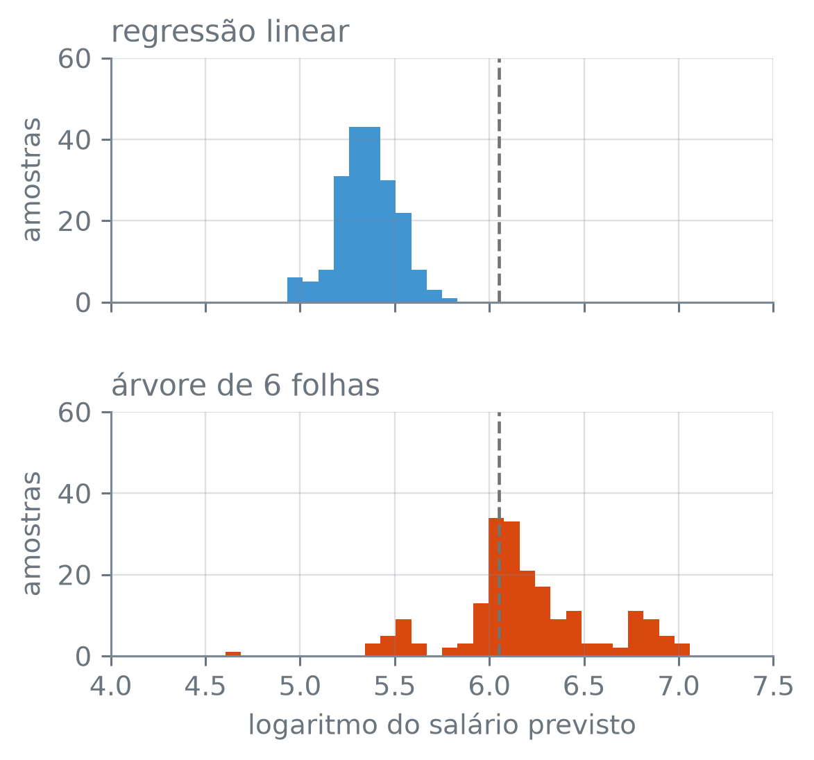

numero_br = lambda valor, casas=2: (
f"{valor:,.{casas}f}".replace(",", "_").replace(".", ",").replace("_", ".")
.replace("-", "−")
)Vantagens e Desvantagens das Árvores
Nota
Esta seção corresponde à seção 8.1.4 de James et al. (2023).
O dirigente de um clube de beisebol quer saber por que o modelo prevê um salário alto para um jogador. Uma árvore responde com as perguntas que o jogador percorreu até a folha: quantas vezes foi ao bastão na carreira, quantas rebatidas fez na temporada. Uma regressão linear responde com uma soma de parcelas, uma por coluna, e cada parcela só faz sentido com as outras colunas fixas. Essa clareza tem preço, e o preço aparece quando a amostra de treino muda.
A função numero_br escreve os números com a pontuação brasileira:
O que as árvores têm a favor
A primeira vantagem já apareceu nas figuras das seções anteriores: uma árvore pequena se desenha numa folha de papel, e quem a lê não precisa saber o que é um coeficiente, uma média ponderada ou um logaritmo da chance. Basta seguir as perguntas de cima para baixo. Explicar uma regressão linear exige mais: dizer que cada coeficiente é o efeito de uma coluna com as outras fixas, e que o efeito é o mesmo para qualquer valor delas. A clareza vale enquanto a árvore é pequena. A árvore sem poda da seção 12.2 também é uma sequência de perguntas, mas tem folhas demais para ser lida de cima para baixo.
A segunda vantagem, a mais discutível, é a semelhança com o modo como as pessoas decidem: um médico que primeiro olha o exame de tálio e, conforme o resultado, pergunta pelo tipo da dor no peito segue um roteiro com a forma de uma árvore. É uma impressão, difícil de medir, e as regras que uma pessoa usa não precisam ser as que a árvore acha nos dados.
A terceira vantagem é de método. Uma coluna de texto com \(K\) categorias pode ser dividida sem virar números: o corte manda um grupo de categorias para um lado e o resto para o outro. Com as \(K\) categorias em dois grupos não vazios, sem importar qual grupo vai para a esquerda, há \(2^{K-1} - 1\) divisões possíveis. A coluna dor_no_peito dos pacientes de Heart é um exemplo:
coracao = pd.read_csv("dados/Heart.csv").dropna()
tipos = sorted(coracao["dor_no_peito"].unique())
K = len(tipos)
print("categorias:", K)
print("2^(K−1) − 1 =", 2 ** (K - 1) - 1)
divisoes = [set(grupo) for tamanho in range(1, K)
for grupo in combinations(tipos, tamanho)
if tipos[0] in grupo]
print("divisões listadas:", len(divisoes))
curto = {"assintomática": "ass", "atípica": "atí",
"não anginosa": "não", "típica": "típ"}
for d in divisoes:
fora = [t for t in tipos if t not in d]
print(" ", " ".join(curto[t] for t in sorted(d)), "|",
" ".join(curto[t] for t in fora))
sozinha = [d for d in divisoes if len(d) in (1, K - 1)]
print("uma categoria contra as outras:", len(sozinha))
print("duas contra duas:", len(divisoes) - len(sozinha))categorias: 4
2^(K−1) − 1 = 7
divisões listadas: 7
ass | atí não típ
ass atí | não típ
ass não | atí típ
ass típ | atí não
ass atí não | típ
ass atí típ | não
ass não típ | atí
uma categoria contra as outras: 4
duas contra duas: 3combinations(itens, tamanho), do módulo itertools — todos os grupos de tamanho itens, sem repetir e sem importar a ordem. Um grupo e o seu complemento são a mesma divisão, por isso a lista fica só com os grupos que contêm a primeira categoria.
Na lista, cada categoria aparece pelas três primeiras letras (ass é a assintomática, atí a atípica, não a não anginosa e típ a típica), e a barra separa os dois lados do corte. As 4 categorias dão 7 divisões: em 4 delas, uma categoria fica sozinha contra as outras três; nas outras 3, as categorias vão duas para cada lado. O DecisionTreeClassifier não recebe texto, e as colunas de texto entram como indicadoras, uma por categoria. Um corte numa indicadora, como dor_no_peito_assintomática ≤ 0,5, separa uma categoria das demais. Das 7 divisões, só as 4 de uma categoria contra as outras três cabem num corte; as 3 de duas contra duas, não. Com o scikit-learn, portanto, a vantagem vale só em parte.
O chunk abaixo refaz a escolha da seção 12.3, com a mesma grade de ccp_alpha e a mesma validação cruzada, chega à árvore de 6 folhas e lista os cortes dela em indicadoras de dor_no_peito, com o ramo da raiz em que cada um está:
y_c = coracao["doenca_cardiaca"]
X_c = pd.get_dummies(coracao.drop(columns="doenca_cardiaca"), dtype=float)
grande = DecisionTreeClassifier(random_state=12).fit(X_c, y_c)
a = grande.cost_complexity_pruning_path(X_c, y_c).ccp_alphas
grade = np.r_[0.0, np.sqrt(a[1:-1] * a[2:])]
busca = GridSearchCV(DecisionTreeClassifier(random_state=12),
{"ccp_alpha": grade[::-1]},
cv=StratifiedKFold(10, shuffle=True, random_state=12),
scoring="accuracy").fit(X_c, y_c)
seis = busca.best_estimator_
print("folhas:", seis.get_n_leaves())
no = seis.tree_
print("raiz:", X_c.columns[no.feature[0]], "≤",
numero_br(no.threshold[0], 1))
for i in np.flatnonzero(no.feature >= 0):
coluna = X_c.columns[no.feature[i]]
if coluna.startswith("dor_no_peito"):
ramo = "sim" if i < no.children_right[0] else "não"
categoria = coluna.removeprefix("dor_no_peito_")
print(f" nó {i}: …_{categoria}, ramo {ramo}")folhas: 6
raiz: talio_normal ≤ 0,5
nó 1: …_assintomática, ramo sim
nó 8: …_assintomática, ramo nãoarvore.tree_.children_right — para cada nó, o número do filho do ramo “não”, o da direita. A árvore numera os nós a partir da raiz, descendo primeiro pelo ramo “sim” até o fim; por isso os nós de número menor que children_right[0] são os do ramo “sim” da raiz, e os outros, os do ramo “não”.
A raiz pergunta pela indicadora do tálio normal, e o ramo “sim” é o dos pacientes cujo exame de tálio não deu normal. Os dois cortes em dor_no_peito são na mesma indicadora, a da dor assintomática, um em cada ramo da raiz: entre os pacientes com tálio normal e entre os outros, a árvore separa essa categoria das outras três. Uma árvore que recebesse a coluna de texto inteira poderia também, num corte só, mandar a dor típica e a atípica para um lado e a assintomática e a não anginosa para o outro. Com indicadoras, esse corte não existe: dois cortes seguidos deixam sempre três grupos e quebram um dos dois pares. Cortando na típica e depois na atípica, as duas ficam separadas uma da outra; cortando na assintomática e depois na não anginosa, são essas duas que se separam.
O que as árvores têm contra
A primeira desvantagem é a precisão. Uma árvore prevê bem quando a relação entre os preditores e a resposta se parece com caixas, e em muitos problemas outros métodos de regressão e de classificação erram menos. Na seção 12.4, a árvore podada venceu a regressão linear sem penalização nos jogadores de Hitters e a regressão logística no simulado de fronteira em L, mas perdeu para a logística nos pacientes de Heart e no simulado de fronteira diagonal, que ela só imitava em escada.
A segunda é a instabilidade: a árvore ajustada depende muito da amostra de treino, e duas amostras do mesmo grupo de jogadores podem dar árvores bem diferentes. O chunk abaixo divide os 263 jogadores de Hitters em duas metades sorteadas, a metade A com 132 jogadores e a B com os 131 restantes, e cresce em cada uma uma árvore de 6 folhas, com as mesmas 19 colunas e a mesma semente. Antes de rodá-lo: as duas metades saem do mesmo grupo de jogadores e passam pela mesma receita. Quantas das colunas usadas pelas duas árvores você espera que sejam as mesmas?
hitters = pd.read_csv("dados/Hitters.csv").dropna()
y = np.log(hitters["salario"])
X = pd.get_dummies(hitters.drop(columns="salario"), drop_first=True,
dtype=float)
A_X, B_X, A_y, B_y = train_test_split(X, y, train_size=132,
random_state=12)
print("jogadores:", len(X), " colunas:", X.shape[1])
arvores, usadas, perguntas = {}, {}, {}
for nome, X_m, y_m in [("A", A_X, A_y), ("B", B_X, B_y)]:
arvore = DecisionTreeRegressor(max_leaf_nodes=6, random_state=12)
arvores[nome] = arvore.fit(X_m, y_m)
no = arvore.tree_
print(f"metade {nome}: {len(y_m)} jogadores, raiz em")
print(" ", X.columns[no.feature[0]], "≤",
numero_br(no.threshold[0], 1))
internos = no.feature >= 0
usadas[nome] = set(X.columns[no.feature[internos]])
perguntas[nome] = set(zip(X.columns[no.feature[internos]],
no.threshold[internos]))
print(" colunas usadas:", len(usadas[nome]))
print("usadas pelas duas:")
for coluna in sorted(usadas["A"] & usadas["B"]):
print(" ", coluna)
print("coluna e limiar iguais:",
len(perguntas["A"] & perguntas["B"]))jogadores: 263 colunas: 19
metade A: 132 jogadores, raiz em
vezes_ao_bastao_carreira ≤ 1.452,0
colunas usadas: 5
metade B: 131 jogadores, raiz em
corridas_carreira ≤ 204,5
colunas usadas: 4
usadas pelas duas:
impulsionadas_carreira
coluna e limiar iguais: 0A metade A é o conjunto de treino da seção 12.2, e a árvore dela começa por vezes_ao_bastao_carreira, com corte em 1.452,0. A da metade B começa por corridas_carreira, com corte em 204,5. A árvore A usa 5 colunas, a B usa 4, e só impulsionadas_carreira aparece nas duas, com limiares diferentes: nenhum par de coluna e limiar se repete. As colunas impulsionadas e rebatidas, sem o sufixo, contam só a temporada, e são colunas diferentes de impulsionadas_carreira e rebatidas_carreira.
Para desenhar cada árvore de seis folhas na largura da página, a função em_portugues reescreve o texto das caixas, como na seção 12.3. Nos nós internos ficam a pergunta, com o limiar na linha de baixo (o split(" <= ") separa a coluna do limiar), e o número de jogadores; nas folhas, o número de jogadores e a média do logaritmo do salário. Os números saem com a pontuação brasileira, pela numero_br, e os rótulos “sim” e “não” são afastados da caixa da raiz, para o lado de fora de cada ramo.
def em_portugues(anotacoes):
"""Traduz e ajusta as caixas que o plot_tree desenha."""
for anotacao in anotacoes:
linhas = (anotacao.get_text().replace("samples = ", "n=")
.replace("True", "sim").replace("False", "não")
.split("\n"))
if " <= " in linhas[0]: # nó interno
coluna, limiar = linhas[0].split(" <= ")
coluna = coluna.replace("_carreira", "_\ncarreira")
limiar = numero_br(float(limiar), 1)
texto = f"{coluna}\n≤ {limiar}\n{linhas[1]}"
elif len(linhas) > 1: # folha
media = float(linhas[1].replace("value = ", ""))
texto = f"{linhas[0]}\n{numero_br(media, 2)}"
else: # rótulo "sim" ou "não", afastado para fora do ramo
texto = linhas[0].strip()
x, y_texto = anotacao.get_position()
lado = -1 if texto == "sim" else 1
anotacao.set_position((x + lado * 0.07, y_texto))
anotacao.set_text(texto)
caixa = anotacao.get_bbox_patch()
if caixa is not None:
caixa.set(facecolor="white", edgecolor="0.45",
boxstyle="round,pad=0.2")anotacao.get_position() e anotacao.set_position((x, y)) — leem e mudam a posição de um texto da figura; nas caixas do plot_tree, em fração do painel, de 0 a 1. Na em_portugues, levam o “sim” 7% da largura do painel para a esquerda e o “não” 7% para a direita, longe da caixa da raiz.
fig, ax = plt.subplots(figsize=(4.4, 4.4))
caixas = plot_tree(arvores["A"], feature_names=list(X.columns),
impurity=False, rounded=True, precision=2,
fontsize=9, ax=ax)
em_portugues(caixas)
ax.set_title("metade A")
plt.show()![Árvore da metade A, com 132 jogadores. A raiz pergunta se vezes_ao_bastao_carreira é menor ou igual a 1.452,0. Do lado sim, com 54 jogadores, pergunta se impulsionadas_carreira é menor ou igual a 70,5 e chega a duas folhas, de 23 jogadores com média 4,64 e de 31 com média 5,46. Do lado não, com 78 jogadores, pergunta se rebatidas é menor ou igual a 122,5; abaixo, pergunta se eliminacoes é menor ou igual a 215,5, com folhas de 28 e 14 jogadores e médias 5,99 e 6,47, e se bases_por_bolas é menor ou igual a 66,0, com folhas de 26 e 10 jogadores e médias 6,67 e 7,24.](05-vantagens-e-desvantagens_files/figure-html/fig-metade-a-output-1.png)
A árvore da metade B, desenhada da mesma forma:
fig, ax = plt.subplots(figsize=(4.2, 4.4))
caixas = plot_tree(arvores["B"], feature_names=list(X.columns),
impurity=False, rounded=True, precision=2,
fontsize=9, ax=ax)
em_portugues(caixas)
ax.set_title("metade B")
plt.show()![Árvore da metade B, com 131 jogadores. A raiz pergunta se corridas_carreira é menor ou igual a 204,5. Do lado sim, com 52 jogadores, pergunta se impulsionadas é menor ou igual a 5,5, com uma folha de 2 jogadores e média 7,24 e, do outro lado, uma pergunta sobre rebatidas_carreira menor ou igual a 207,5, com folhas de 31 e 19 jogadores e médias 4,70 e 5,54. Do lado não, com 79 jogadores, pergunta se impulsionadas é menor ou igual a 59,0, com uma folha de 39 jogadores e média 6,20 e uma pergunta sobre impulsionadas_carreira menor ou igual a 358,5, com folhas de 12 e 28 jogadores e médias 6,34 e 6,98. Só impulsionadas_carreira aparece também na árvore da metade A.](05-vantagens-e-desvantagens_files/figure-html/fig-metade-b-output-1.png)
As duas árvores começam por colunas diferentes e seguem por caminhos diferentes. De onde vem tanta diferença, se as duas metades saem do mesmo grupo de jogadores? A raiz é o corte que mais reduz o RSS, e o chunk abaixo mede, em cada metade, a fração do RSS da árvore sem cortes, a que prevê a média para todos, que o melhor corte de cada coluna, sozinho, remove. Na tabela, a coluna A traz as frações da metade A, e a coluna B, as da metade B:
def fracao_removida(X_m, y_m):
"""Fração do RSS da média que o melhor corte de cada coluna remove."""
tss = ((y_m - y_m.mean()) ** 2).sum()
fracao = {}
for coluna in X_m.columns:
toco = DecisionTreeRegressor(max_depth=1, random_state=12)
previsto = toco.fit(X_m[[coluna]], y_m).predict(X_m[[coluna]])
fracao[coluna] = 1 - ((y_m - previsto) ** 2).sum() / tss
return pd.Series(fracao)
cortes = pd.DataFrame({"A": fracao_removida(A_X, A_y),
"B": fracao_removida(B_X, B_y)})
for nome in ["A", "B"]:
print(nome, "melhor é a raiz:", cortes[nome].idxmax()
== X.columns[arvores[nome].tree_.feature[0]])
cinco = {m: set(cortes[m].nlargest(5).index) for m in ["A", "B"]}
print("5 primeiras iguais nas duas:", cinco["A"] == cinco["B"])
(cortes.loc[sorted(cinco["A"])].sort_values("A", ascending=False)
.style.format(lambda v: numero_br(v, 3)))A melhor é a raiz: True
B melhor é a raiz: True
5 primeiras iguais nas duas: True| A | B | |
|---|---|---|
| vezes_ao_bastao_carreira | 0,602 | 0,554 |
| rebatidas_carreira | 0,591 | 0,551 |
| bases_por_bolas_carreira | 0,584 | 0,494 |
| corridas_carreira | 0,578 | 0,556 |
| impulsionadas_carreira | 0,547 | 0,522 |
DecisionTreeRegressor(max_depth) — max_depth=1 limita a árvore a uma pergunta só, a raiz e duas folhas; ajustada com uma coluna, faz o melhor corte naquela coluna. s.nlargest(5) — os cinco maiores valores da série. df.sort_values(coluna, ascending=False) — as linhas em ordem decrescente da coluna.
Nas duas metades, a raiz da árvore é a coluna do melhor corte isolado, e as cinco colunas com os melhores cortes são as mesmas: cinco contagens acumuladas na carreira. No topo da tabela, a disputa é apertada. Na metade B, o corte em corridas_carreira remove 0,556 do RSS e o em vezes_ao_bastao_carreira, 0,554, uma diferença de 0,002; na A, a ordem se inverte: 0,578 para corridas_carreira e 0,602 para vezes_ao_bastao_carreira. As cinco colunas medem quase a mesma coisa, o tempo e o volume de jogo de cada jogador:
correlacoes = hitters[sorted(cinco["A"])].corr()
pares = correlacoes.to_numpy()[np.triu_indices(5, 1)]
print("pares de colunas:", len(pares))
print("menor correlação:", numero_br(pares.min(), 3))
print("maior correlação:", numero_br(pares.max(), 3))pares de colunas: 10
menor correlação: 0,889
maior correlação: 0,995df.corr() — a matriz de correlações entre todas as colunas numéricas da tabela, uma linha e uma coluna para cada. np.triu_indices(n, 1) — as posições acima da diagonal de uma matriz \(n \times n\); aqui, cada par de colunas uma vez só.
As correlações entre as cinco, nos 10 pares, vão de 0,889 a 0,995. Com colunas quase repetidas, a coluna escrita na raiz pode trocar de uma amostra para outra sem que a divisão dos jogadores mude muito. O chunk abaixo aplica as duas perguntas da raiz aos 263 jogadores e conta quantos elas mandam para o mesmo lado:
lado = {}
for nome in ["A", "B"]:
no = arvores[nome].tree_
coluna = X.columns[no.feature[0]]
lado[nome] = X[coluna] <= no.threshold[0]
iguais = (lado["A"] == lado["B"]).sum()
print("mesmo lado:", iguais, "de", len(X))
print("fração:", numero_br(iguais / len(X), 3))mesmo lado: 253 de 263
fração: 0,962As duas perguntas mandam 253 dos 263 jogadores para o mesmo lado: a raiz trocou de coluna, mas separou quase os mesmos jogadores. A diferença entre as árvores está abaixo da raiz. O corte que vence em cada nó depende só dos jogadores que chegam a ele, e as metades A e B não têm nenhum jogador em comum. E a divisão gulosa da seção 12.1 decide cada nó sem voltar atrás.
Estrutura diferente, sozinha, não quer dizer previsão diferente: duas árvores com perguntas diferentes podem prever quase o mesmo salário para cada jogador. A variância da seção 7.6 é o quanto a previsão \(\hat f(x_0)\) muda de um conjunto de treino para outro. O chunk abaixo a mede: sorteia 200 amostras de 132 jogadores, ajusta em cada uma a árvore de 6 folhas e uma regressão linear sem penalização, com as mesmas 19 colunas, e prevê os 263 jogadores com cada modelo. Para cada jogador, calcula a variância das 200 previsões e no fim tira a média entre os jogadores:
previsoes = {"árvore": [], "linear": []}
for semente in range(200):
X_t, _, y_t, _ = train_test_split(X, y, train_size=132,
random_state=semente)
arvore = DecisionTreeRegressor(max_leaf_nodes=6, random_state=12)
previsoes["árvore"].append(arvore.fit(X_t, y_t).predict(X))
linear = LinearRegression().fit(X_t, y_t)
previsoes["linear"].append(linear.predict(X))
variancia = {modelo: np.var(np.array(p), axis=0).mean()
for modelo, p in previsoes.items()}
for modelo, v in variancia.items():
print(f"{modelo}: {numero_br(v, 3)}")
print("árvore varia mais:", variancia["árvore"] > variancia["linear"])árvore: 0,077
linear: 0,041
árvore varia mais: Truenp.var(matriz, axis=0) — a variância de cada coluna da matriz. Aqui, cada linha são as previsões de uma amostra e cada coluna é um jogador, e .mean() tira a média das 263 variâncias.
A previsão da árvore para um mesmo jogador tem variância média de 0,077 entre as 200 amostras, e a da regressão linear, de 0,041. Neste problema, a árvore tem variância maior que a da regressão linear: ela muda de estrutura e também de previsão quando a amostra muda. Para ver o que essa média resume, o chunk abaixo escolhe um jogador só, o primeiro da tabela entre os de salário igual à mediana, e separa as 200 previsões de cada modelo para ele:
mediano = (hitters["salario"] - hitters["salario"].median()).abs().idxmin()
j = hitters.index.get_loc(mediano)
print("salário mediano:", numero_br(hitters["salario"].median(), 1))
print("salário do jogador:", numero_br(hitters.loc[mediano, "salario"], 1))
print("jogadores com esse salário:",
(hitters["salario"] == hitters.loc[mediano, "salario"]).sum())
print("log do salário:", numero_br(y.iloc[j]))
do_jogador = {m: np.array(p)[:, j] for m, p in previsoes.items()}
for modelo, prev in do_jogador.items():
print(f"{modelo}: de {numero_br(prev.min())} a {numero_br(prev.max())}")
print(" variância:", numero_br(prev.var(), 3))
print(" abaixo do real:", (prev < y.iloc[j]).sum(), "de 200")salário mediano: 425,0
salário do jogador: 425,0
jogadores com esse salário: 3
log do salário: 6,05
árvore: de 4,61 a 7,06
variância: 0,147
abaixo do real: 57 de 200
linear: de 4,98 a 5,80
variância: 0,023
abaixo do real: 200 de 200indice.get_loc(rotulo) — a posição, contada de zero, da linha que tem aquele rótulo no índice. As previsões guardadas em previsoes estão em ordem de linha, e é a posição que as indexa.
fig, eixos = plt.subplots(2, 1, figsize=(4.4, 4.0), sharex=True,
sharey=True)
fig.subplots_adjust(hspace=0.45)
todas = np.concatenate(list(do_jogador.values()))
faixas = np.linspace(todas.min(), todas.max(), 31)
for ax, modelo, cor, titulo in [
(eixos[0], "linear", "C0", "regressão linear"),
(eixos[1], "árvore", "C1", "árvore de 6 folhas")]:
ax.hist(do_jogador[modelo], bins=faixas, color=cor,
edgecolor="none")
ax.axvline(y.iloc[j], color="0.45", linestyle="--", linewidth=1.2)
ax.set_title(titulo, loc="left")
ax.set_ylabel("amostras")
eixos[1].set_xlabel("logaritmo do salário previsto")
plt.show()
ax.hist(valores, bins) — o histograma dos valores; bins recebe as bordas das faixas, as mesmas nos dois painéis para que as barras se comparem.
O jogador ganha 425,0 mil dólares, a mediana, como outros dois. As previsões da regressão linear para ele vão de 4,98 a 5,80, com variância 0,023; as da árvore vão de 4,61 a 7,06, com variância 0,147. De uma amostra para outra, o jogador cai em folhas diferentes, e cada folha dá um valor, por isso o histograma da árvore sai em grupos separados. A linear erra de outro jeito: as 200 previsões dela ficam abaixo do logaritmo do salário real, 6,05, e só 57 das 200 da árvore ficam.
Variância maior não quer dizer erro maior: o erro de teste esperado soma a variância, o viés ao quadrado e o erro irredutível (seção 7.6), e na seção 12.4 a árvore podada errou menos que a linear nesses jogadores.
Na prática, a árvore é uma boa escolha quando é preciso explicar a previsão a quem não é técnico, ou quando a relação tem limiares e interações, como no simulado em L da seção 12.4. Quando só o erro de teste conta, ela entra na comparação por validação cruzada, como na seção 12.4, e perde quando outro modelo erra menos. Juntar muitas árvores, cada uma ajustada numa amostra diferente dos dados, e combinar as previsões delas ataca justamente a variância; é o assunto do capítulo 13.
James, Gareth, Daniela Witten, Trevor Hastie, Robert Tibshirani, e Jonathan Taylor. 2023. An Introduction to Statistical Learning with Applications in Python. Springer.